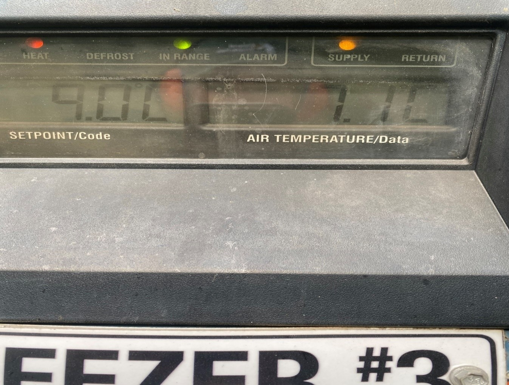
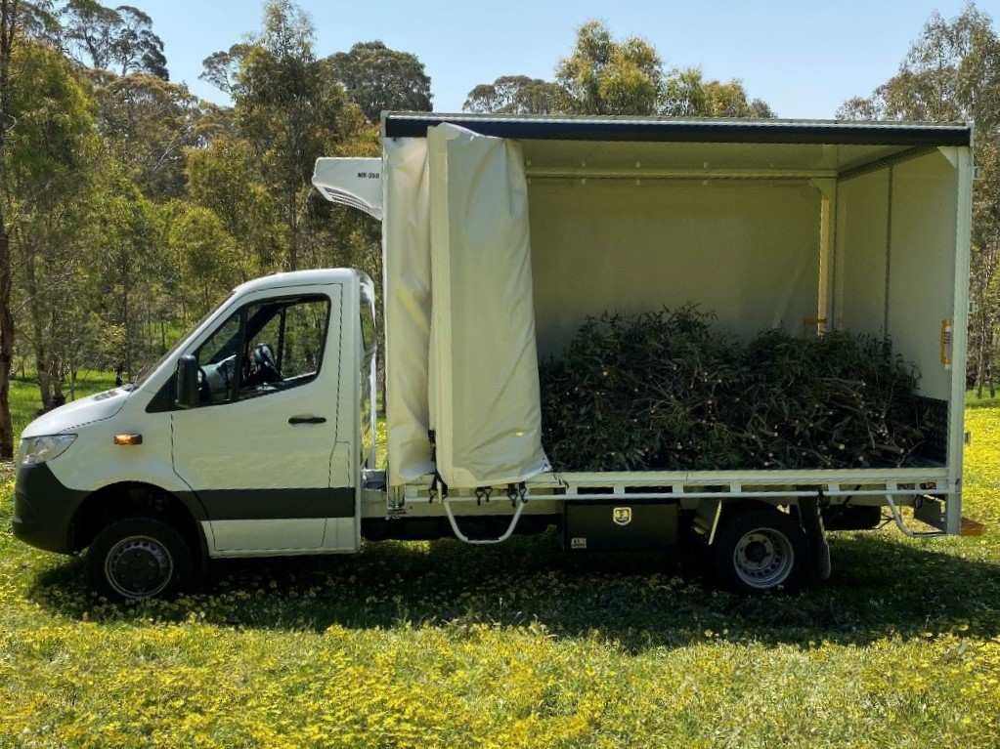
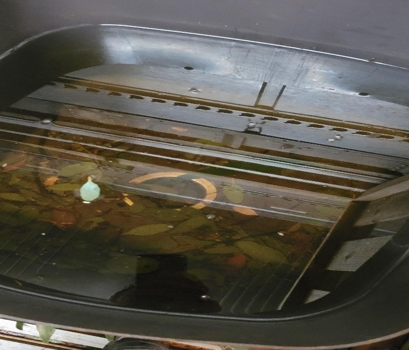
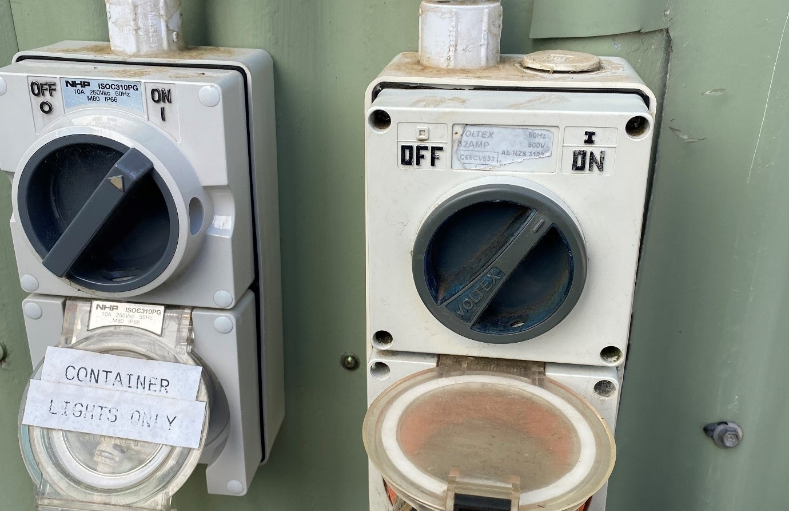

Harvested gum is stored in one of the three gum fridges in the animal management area. The fridge temperatures are set at between 9 to 11 degrees Celsius.
Ensuring the gum is stored in clean buckets and fresh water helps with keeping the gum fresh and increases the longevity for feeding out. It is imperative that the Gum Fridge waters are changed, and the pots are scrubbed every Monday and Friday at a minimum. If time the gum waters can be changed on the Wednesday, however if time is short a freshening up the buckets by circulating the water that already has gum can be done.
When placing the cut gum into the clean water buckets please ensure that all the cut sticks are in the water well, as the gum will dry out and be wasted if it is not in water.
Please be sure to not fill the holding buckets so full that it makes it difficult for the keepers to get the gum back out when taking for feed out. When entering the fridges, you must wear ear protection or switch the fridge off as the fridge noise is loud and can damage hearing. When leaving the fridge always ensure earmuffs are returned to hook, the lights are turned off, door is closed, and fridge is turned back on.
When transporting the gum in Gum 1, please have the fridge running at all times, particularly when warm as it does take some time for the fridge to get to the set temperature.
Generally, we cut 400 pieces per load plus tip.
If arriving back to park and wanting to have lunch before unloading the gum in Gum 1, please ensure that the fridge is kept on for the 30 minutes whilst your break is being had.
When unloading the gum into one of the fridges please be mindful of the amounts and species of gum that is going into each fridge. If unsure, please follow the gum plan or ask the Senior Koala keeper.
Once finished unloading Gum 1 please sweep out and clean the tray ready for the next load.
Please also ensure that gum debris is raked up and placed in dumping pile (not left in a pile on ground). Thank you so much.
From time-to-time Fauna 2 will need to be used for gum cutting, be it a location that only Fauna 2 will fit or if Gum 1 is being used elsewhere or if you need to do a quick top up cut. Please keep in to check your equipment before you leave as there is only one pair of loppers and one bowsaw which are permanently kept in Fauna 2.
If you are cutting with Fauna 2 for a load that needs to be fed straight out on the same day, please load 3 piles of 20 pieces across the back tray and another 20 pieces facing outwards behind the passenger side on tray.
This load is then ready to drive straight down the bottom to feed out and saves double handling.
The KI Gum can be placed sticks facing out behind the driver’s side for ease of unloading when returning to the park.
If the temperature is over 18 degrees, please be sure to put the large brown canvas over the load of gum and tie down to help minimise wind damage and the gum drying out.
The canvas is kept in the toolbox on the side of the tray.
Each week the koalas chew through well over 1200 pieces of gum. Once the gum has been offered to the koalas, some of it then gets offered to the Kangaroos for additional foliage, some to the Parrot Aviary for behavioural enrichment and some for bushing out other aviaries for nesting and shelter.
Once everyone in the park has made good use of the gum, the used gum is then placed on the Gum rack at the beginning of Long Ridge.
This used gum is required to be chipped every week.
(more to add when information comes available)
It is imperative that the freshly harvested gum is kept in fresh water as the gum takes up additional water whilst being stored in the fridge. Due to the tannins in the gum the storage water becomes tainted and smelly quite quickly if the water is not changed regularly. Every Monday and Friday the Gum Fridges are thoroughly cleaned, and the Gum Holding Pots are thoroughly scrubbed and refilled with fresh water. On Wednesday the gum waters are changed, and pots are scrubbed if not full of gum, otherwise circulating the water in the pots if full of gum or time is running short helps keep the water fresh until Friday’s clean.
Monday, Wednesday and Friday the fridges are cleaned of leaf litter and debris either using a blower, boom or hose.
Daily the leaf litter around the fridge doors are to be raked up and placed in waste pile near Eastern Area.( not left in a pile near fridge door!)
When placing the cut gum in to the clean water buckets please ensure that all the cut sticks are in the water well, as the gum will dry out and be wasted if it is not in water.
When entering the fridges, you must wear ear protection or switch the fridge off as the fridge noise is loud and can damage hearing
When leaving the fridge always ensure the lights are turned off and fridge is turned back on.
